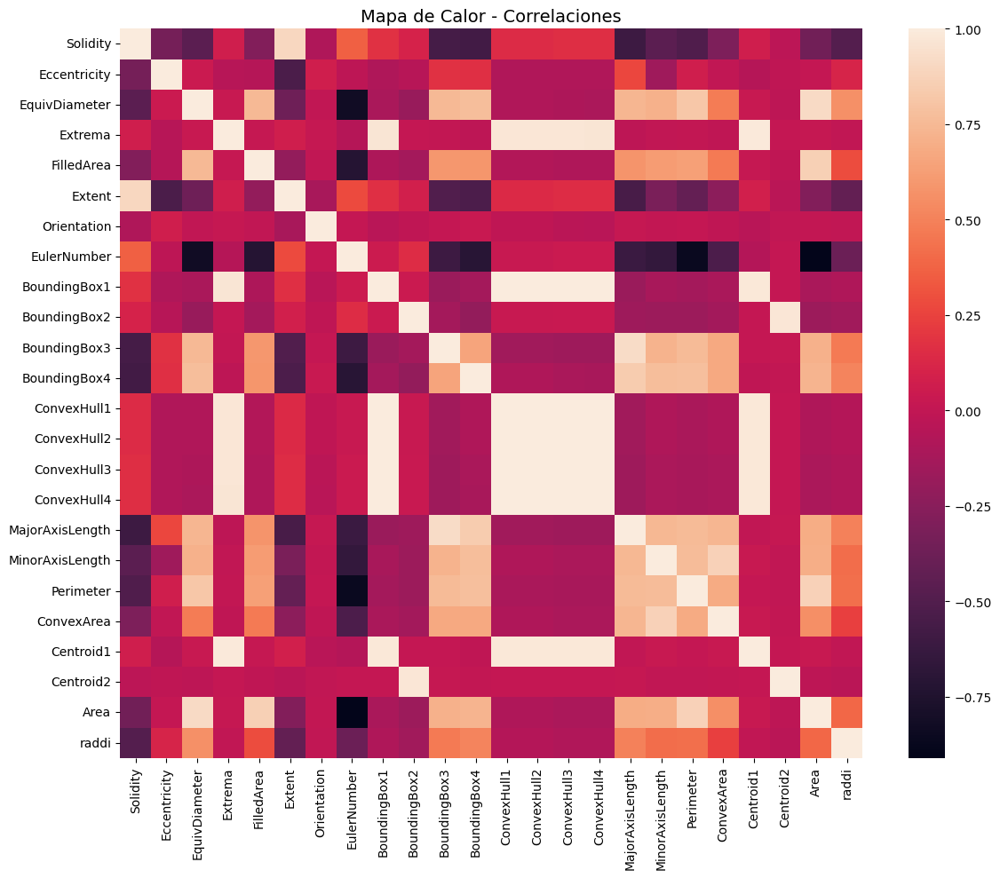
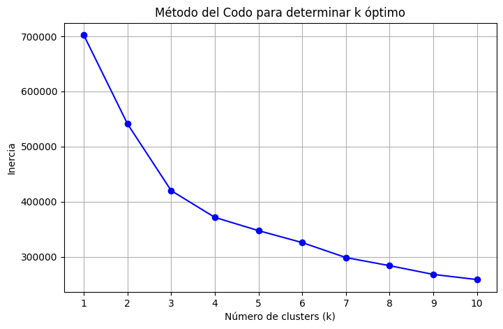
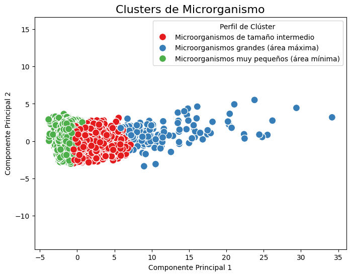
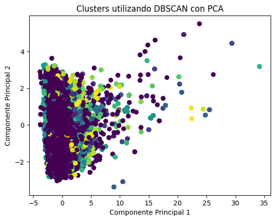
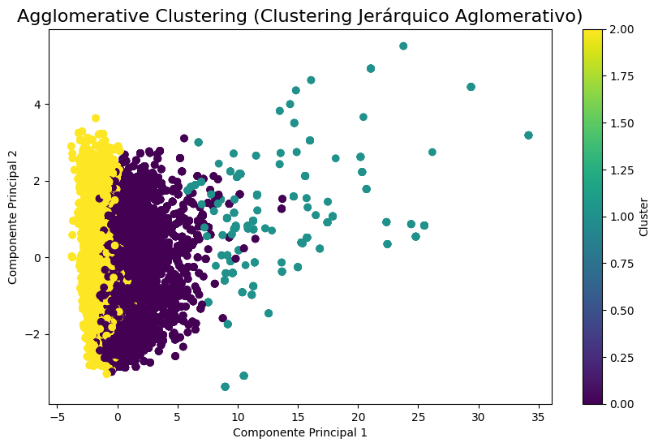
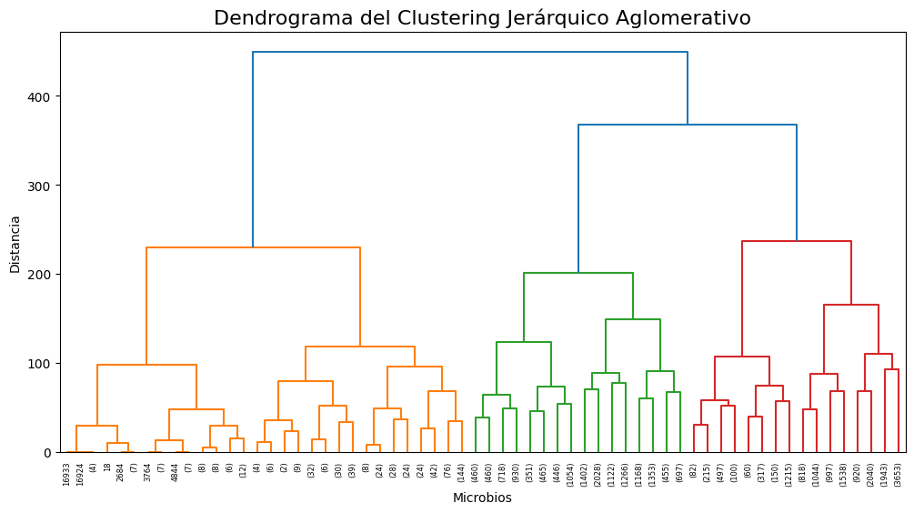

Mapa de Calor (Correlaciones)
Permite visualizar la fuerza de relación entre variables genéticas. Es el primer paso para entender qué características influyen más en la resistencia bacteriana.

Descubriendo estructuras ocultas en datos no etiquetados para la toma de decisiones basada en patrones naturales.
Históricamente, la lectura del ADN (tecnología NGS) ha funcionado triturando el código genético en millones de fragmentos pequeños para luego rearmarlos como un rompecabezas, un proceso preciso pero que puede tardar días. Sin embargo, las nuevas tecnologías de tercera generación (TGS), como la secuenciación por nanoporos, permiten leer hebras de ADN larguísimas en tiempo real mientras pasan por un sensor eléctrico. Aunque esto es mucho más veloz, genera un volumen masivo de señales complejas que deben ser interpretadas de inmediato para ser útiles en entornos médicos de emergencia.
El Estado del Arte actual se enfoca en el uso de Aprendizaje No Supervisado para procesar estas señales eléctricas sin necesidad de análisis humanos previos. En casos críticos como el shock séptico, donde la mortalidad sube un 7.6% por cada hora de retraso, algoritmos de clustering permiten agrupar y categorizar patrones genéticos de resistencia a antibióticos de forma instantánea. Así, la tecnología actual busca transformar datos crudos y desordenados en diagnósticos vitales en cuestión de minutos, eliminando la espera de los cultivos de laboratorio tradicionales.
Permite visualizar la fuerza de relación entre variables genéticas. Es el primer paso para entender qué características influyen más en la resistencia bacteriana.

Técnica fundamental para determinar el número óptimo de grupos (K). Nos indica el punto donde añadir más clusters ya no aporta una mejora significativa al modelo.

Algoritmo de particionamiento que agrupa las secuencias en grupos basados en la similitud de sus señales eléctricas, facilitando la identificación de especies.

Clustering basado en densidad. Es excelente para filtrar el "ruido" de las señales de los nanoporos y encontrar grupos de bacterias con formas irregulares.

Construye una jerarquía de grupos de abajo hacia arriba. Es muy útil para visualizar la taxonomía bacteriana y qué tan emparentadas están las resistencias encontradas.

La representación visual del clustering jerárquico. Permite decidir con precisión dónde realizar el "corte" para definir las familias de bacterias identificadas.

Históricamente, la lectura del ADN (tecnología NGS) ha funcionado triturando el código genético en millones de fragmentos pequeños para luego rearmarlos como un rompecabezas, un proceso preciso pero que puede tardar días. Sin embargo, las nuevas tecnologías de tercera generación (TGS), como la secuenciación por nanoporos, permiten leer hebras de ADN larguísimas en tiempo real mientras pasan por un sensor eléctrico. Aunque esto es mucho más veloz, genera un volumen masivo de señales complejas que deben ser interpretadas de inmediato para ser útiles en entornos médicos de emergencia.
El Estado del Arte actual se enfoca en el uso de Aprendizaje No Supervisado para procesar estas señales eléctricas sin necesidad de análisis humanos previos. En casos críticos como el shock séptico, donde la mortalidad sube un 7.6% por cada hora de retraso, algoritmos de clustering permiten agrupar y categorizar patrones genéticos de resistencia a antibióticos de forma instantánea. Así, la tecnología actual busca transformar datos crudos y desordenados en diagnósticos vitales en cuestión de minutos, eliminando la espera de los cultivos de laboratorio tradicionales.